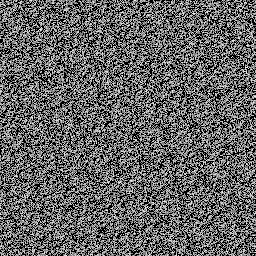
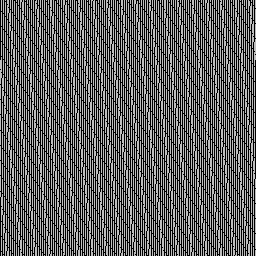

Fred's game tech articles (title pending)
Reverse engineering, retro game archeology and speedrun research
Pseudo-Random Number Generators
Last edited: 2021-10-12
Randomness in games is an important part of making every playthrough different and keeping the player on their toes. But where does it come from? Here we'll look at some algorithms games employ to create randomness.
I will say up-front that I am in no way an expert on randomness, I have just stumbled upon the subject many times while researching games for speedrun and TAS purposes. With that out of the way, let's get to it!
The below images are made by generating a pair of random numbers from the PRNG in question, and using them as coordinates into a black image. The brightness is then increased at the selected coordinate, until a pixel that is max white would get hit again. The images aren't super scientific and don't necessarily match what actually happens in-game. Still, they give us some idea of what's going on.
Using the frame counter (Capcom)
This method has four state variables that are increased in different multiples of the frame counter, and cycles between them on every PRNG request. In addition, the PRNG request also updates the state with it's own constant.
It should be noted that the carry flag which is used for the ADC operation is set differently every time the Frame_update() function is called, making the state update less predictable.
This one is hard to fairly represent in an image - this image was generated by simulating two PRNG requests per frame (which is way more frequent than what would ever happen in the actual game).
u16 frame_counter = 0 array[u8, 4] rng_state = (0, 0, 0, 0) u8 slot = 0 bool carry //cpu carry flag. indeterminate state when entering functions! u8 Get_prng_value() { slot = (slot + 1) & 3 //increment slot and limit to 0-3 ADC(rng_state[slot], 0x13) return rng_state[slot] } void Frame_update() Called every frame { ADC(rng_state[0], 1) ADC(rng_state[1], 3) ADC(rng_state[2], 5) ADC(rng_state[3], 7) if(frame_counter & 0xFF == 0) //every 256th frame { ADC(rng_state[2], rng_state[3]) ADC(rng_state[1], rng_state[2]) ADC(rng_state[0], rng_state[1]) } frame_counter += 1 //the frame counter is updated elsewhere in actual code } void ADC(u8 &dst, u8 src) //emulating the add-with-carry cpu instruction { u16 result = dst + src + carry carry = result & 0x100 //carry flag set if result is bigger than 0xFF dst = result //store 8-bit result in the first operand } Iterations before pixel brightness overflow: 4457510
Games known to use this PRNG:
- Final Fight - SNES (1990-12-21)
Notes:
- - Breath of Fire (1993-04-03)
Notes:
-
An early Capcom LCG
Many early Capcom games on the snes started out with a LCG random number generator with m=216, c=0. This setup (c=0) is also known as a Lehmer RNG.
Nothing fancy, but it gets the job done. Notice the uniform diagonal patterns in the generated image.
u16 prng_state = 0x01C3 u8 Get_prng_value() { rng_state *= 259 return rng_state >> 8 } Iterations before pixel brightness overflow: 2088960
Games known to use this PRNG:
- Super Ghouls 'n Ghosts (1991-10-04)
Notes:
Called on demand only.
Used heavily in stage 1, which will "seed" the state. - The Magical Quest Starring Mickey Mouse (1992-11-20)
Notes:
Called on demand only.
No attempts at seeding the state.
Resets the state at every new stage. - Aladdin (1993-11-21)
Notes:
Called on demand only.
Frequent prng usage early to "seed" the state.
Dying resets the state.
Another LCG from Capcom
This time we have an LCG with m=216, c=15329.
u16 prng_state = 0
u8 Get_prng_value()
{
rng_state = rng_state * 137 + 15329;
return rngState >> 8;
}
Iterations before pixel brightness overflow: 8355840
Games known to use this PRNG:
- Final Fight 2 (1993-05-22)
Notes:
Called on demand only.
Capcom's broken PRNG!
At some point, Capcom decided to switch up their PRNG algorithm, but something clearly went wrong here! The algorithm itself is fine - it's actually an improvement over their previous LCG. They just used the wrong half of the rng state as a return value!
u16 prng_state = 0x01C3 u8 Get_prng_value() { x = (rng_state * 3) & 0xFF00 rng_state = x | u8((x >> 8) + rng_state) return rng_state >> 8 } Iterations before pixel brightness overflow: 115894
Games known to use this PRNG:
- Goof Troop (1993-07-11)
Notes:
Called on demand only. - The Great Circus Mystery Starring Mickey & Minnie (1994-10-??)
Notes:
Called on demand only.
Capcom's fixed PRNG
Luckily Capcom realized something wasn't quite right and fixed the return value issue. The initial state was also updated. The generated image has much less apparent symmetry compared to the earlier LCG.
u16 prng_state = 0x0D37 u8 Get_prng_value() { x = (rng_state * 3) & 0xFF00 rng_state = x | u8((x >> 8) + rng_state) return rng_state } Iterations before pixel brightness overflow: 5550585
Games known to use this PRNG:
- Mega Man X (1993-12-17)
Notes:
Called every frame and on demand. - Demon's Crest (1994-10-21)
Notes:
Called every frame and on demand. - Mega Man X2 (1994-12-16)
Notes:
Called every frame and on demand. - Mega Man X3 (1995-12-01)
Notes:
Called every frame and on demand.
Quintet's state-of-the-art PRNG
Quintet employed a quite sophisticated PRNG for the time - the Add-with-carry algorithm. While requiring a bigger state and more execution time to update, the difference certainly shows up on the generated image. Note the black diagonal line: this is due to the zero state prevention that always runs when the PRNG is called.
array[u8, 16] rng_state //16 byte array, initialized to all 0s u8 Get_prng_value() { bool carry = 0 for(int x = 15; x > 0; --x) { u16 result = rng_state[x - 1] + rng_state[x] + carry rng_state[x - 1] = result carry = result >> 8 } for(int x = 16; x > 0; --x) //zero state prevention { if(++rng_state[x - 1]) { break } } return rng_state[0] //original code returns a 16 bit value but i strongly suspect it's only using 8 bits } Iterations before pixel brightness overflow: 12607491
Games known to use this PRNG:
- ActRaiser 1 (1990-12-16)
Notes:
Called on demand only.
Room transitions write the frame counter to state[0-1]. - Soul Blazer (1992-01-31)
Notes:
Called on demand only. - ActRaiser 2 (1993-10-29)
Notes:
Called on demand only.
First intended stage "seeds" the rng (player is free to choose any starting stage however). - Robotrek (1994-07-08)
Notes:
Called on demand only.
First town frequently calls the prng.
Screen transitions writes the frame counter to state[2-3].
Human Entertainment's LFSR
This appears to be a (Fibonacci) Linear-Feedback Shift Register, or LFSR for short. The taps are bits 57 and 49; bit 0 is not a tap, oddly enough. The period (the amount of updates until the initial state is reached again) is a measly 32767, which could be achieved with a quarter of the bits used and some better chosen taps.
array[u8, 8] rng_state = (1, 0, 0, 0, 0, 0, 0, 0) void Update_rng() //called many times every other frame { rng_state = rng_state >> 1 //shift entire array right as if it was one continous value rng_state[0] |= (rng_state[0] ^ rng_state[1]) << 7 //feedback from taps } Iterations before pixel brightness overflow: 8355585
Games known to use this PRNG:
- SOS (1993-05-28)
Notes:
From what I've seen, the game appears to mainly read bytes 0-3, sometimes 4-5 and never 6-7.